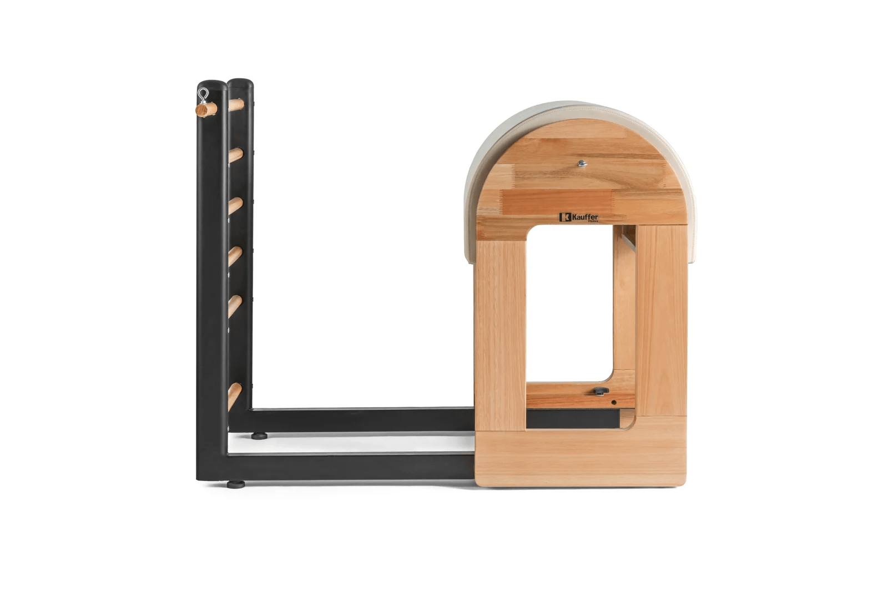

Perfil:@tatisouzapilates
Perfil:@tatisouzapilates
O Ladder Barrel é produzido com madeira nobre, base em estrutura de aço e estofamento com EVA, o que garante maior durabilidade à esta peça. O nome desse equipamento de pilates, na tradução literal, seria algo parecido com “Barril Escada”. Isso se dá devido ao seu formato arredondado na parte estofada e pelo espaldar de madeira na na parte frontal, que lembra uma escada. Também pode ser conhecido apenas como Barril, por seu formato curvado! As medidas do Ladder Barrel da Kauffer são: 61,5 cm de largura,97 cm de altura da escada,91 cm de altura do barril e 122 cm de comprimento máximo.
fonte:kaufferpilates
Voltar